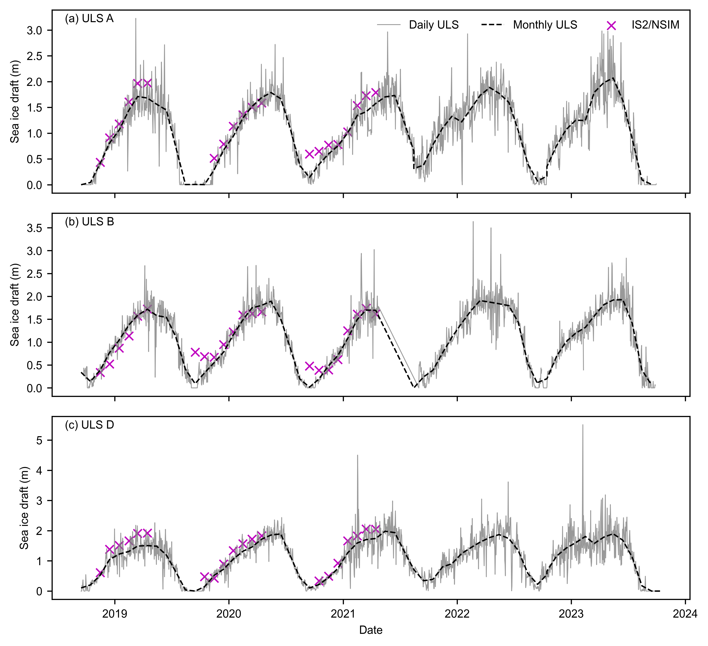

Comparisons of winter (November to April) ICESat-2 and CryoSat-2 sea ice thickness datasets with BGEP ULS sea ice draft estimates#
Summary: In this notebook, we produce comparisons of winter monthly gridded ICESat-2 and CryoSat-2 sea ice thickness data with draft measurements obtained from Upward Looking Sonar moorings deployed in the Beaufort Sea.
Author: Alek Petty
Version history:
Version 2 (09/25/2025): updated with new MERRA-2 and ERA5 snow loading and some other tweaks.
Version 1 (05/01/2025)
Import notebook dependencies#
import xarray as xr
import pandas as pd
import numpy as np
import itertools
import pyproj
from netCDF4 import Dataset
import scipy.interpolate
from utils.read_data_utils import read_book_data, read_IS2SITMOGR4 # Helper function for reading the data from the bucket
from utils.plotting_utils import compute_gridcell_winter_means, interactiveArcticMaps, interactive_winter_mean_maps, interactive_winter_comparison_lineplot # Plotting
from scipy import stats
import datetime
# Plotting dependencies
import cartopy.crs as ccrs
from textwrap import wrap
import hvplot.pandas
import holoviews as hv
import matplotlib.pyplot as plt
from matplotlib.axes import Axes
from cartopy.mpl.geoaxes import GeoAxes
GeoAxes._pcolormesh_patched = Axes.pcolormesh # Helps avoid some weird issues with the polar projection
%config InlineBackend.figure_format = 'retina'
import matplotlib as mpl
mpl.rcParams['figure.dpi'] = 300 # Sets figure size in the notebook
# Remove warnings to improve display
import warnings
warnings.filterwarnings('ignore')
# Set some plotting parameters
mpl.rcParams.update({
"text.usetex": False, # Use LaTeX for rendering
"font.family": "sans-serif",
"lines.linewidth": 1.,
"font.size": 8,
#"lines.alpha": 0.8,
"axes.labelsize": 8,
"xtick.labelsize": 8,
"ytick.labelsize": 8,
"legend.fontsize": 8
})
mpl.rcParams['font.sans-serif'] = ['Arial']
mpl.rcParams['figure.dpi'] = 300
# Include extra var = '_int' to use interpolated values
int_str = '_int'
reanalysis = 'm2'
reanalysis_two = 'e5'
start_date = "Nov 2018"
end_date = "Apr 2021"
options = {
'IS2/NSIM': {'thickness': 'ice_thickness'+int_str, 'snow_depth': 'snow_depth'+int_str},
'IS2/SMLG-'+reanalysis.capitalize(): {'thickness': 'ice_thickness_sm_'+reanalysis+int_str, 'snow_depth': 'snow_depth_sm_'+reanalysis+int_str},
'IS2/SMLG-'+reanalysis_two.capitalize(): {'thickness': 'ice_thickness_sm_'+reanalysis_two+int_str, 'snow_depth': 'snow_depth_sm_'+reanalysis_two+int_str},
'IS2/MW99r': {'thickness': 'ice_thickness_mw99r', 'snow_depth': 'snow_depth_mw99r'},
'IS2/NSIM/J22': {'thickness': 'ice_thickness_J22'+int_str, 'snow_depth': 'snow_depth'+int_str},
'CS2/SMLG-M2': {'thickness': 'ice_thickness_cs2_ubris', 'snow_depth': 'snow_depth_sm_m2'+int_str},
}
# DO A FULL RUN UP TO 2023
#start_date = "Nov 2018"
#end_date = "Apr 2023"
#options = {
# 'nsim': {'thickness': 'ice_thickness', 'snow_depth': 'snow_depth'},
# 'nsim_int': {'thickness': 'ice_thickness_int', 'snow_depth': 'snow_depth_int'},
# 'mw99': {'thickness': 'ice_thickness_mw99', 'snow_depth': 'snow_depth_mw99'},
# 'j22': {'thickness': 'ice_thickness_j22', 'snow_depth': 'snow_depth'}}
# Load the all-season wrangled dataset
IS2SITMOGR4_v3 = xr.open_dataset('./data/book_data_allseason_v1.nc')
print("Successfully loaded all-season wrangled dataset")
Successfully loaded all-season wrangled dataset
IS2SITMOGR4_v3
<xarray.Dataset> Size: 990MB
Dimensions: (time: 33, y: 448, x: 304)
Coordinates:
* time (time) datetime64[ns] 264B 2018-11-15 ......
* x (x) float32 1kB -3.838e+06 ... 3.738e+06
* y (y) float32 2kB 5.838e+06 ... -5.338e+06
longitude (y, x) float32 545kB ...
latitude (y, x) float32 545kB ...
Data variables: (12/53)
crs (time) float64 264B ...
ice_thickness_sm_e5 (time, y, x) float32 18MB ...
ice_thickness_sm_m2 (time, y, x) float32 18MB ...
ice_thickness_unc (time, y, x) float32 18MB ...
num_segments (time, y, x) float32 18MB ...
mean_day_of_month (time, y, x) float32 18MB ...
... ...
snow_density_w99r_int (time, y, x) float32 18MB ...
ice_density_j22_int (time, y, x) float32 18MB ...
ice_thickness_cs2_ubris (time, y, x) float64 36MB ...
cs2_sea_ice_type_UBRIS (time, y, x) float64 36MB ...
cs2_sea_ice_density_UBRIS (time, y, x) float64 36MB ...
cs2is2_snow_depth (time, y, x) float64 36MB ...
Attributes:
contact: Alek Petty (akpetty@umd.edu)
description: Aggregated IS2SITMOGR4 summer V1 dataset.
history: Created 23/07/25# Get some map proj info needed for later functions
out_proj = 'EPSG:3411'
mapProj = pyproj.Proj("+init=" + out_proj)
xIS2 = IS2SITMOGR4_v3.x.values
yIS2 = IS2SITMOGR4_v3.y.values
xptsIS2, yptsIS2 = np.meshgrid(xIS2, yIS2)
out_lons = IS2SITMOGR4_v3.longitude.values
out_lats = IS2SITMOGR4_v3.latitude.values
# Set Inner Arctic domain
innerArctic = [1,2,3,4,5,6]
IS2SITMOGR4_v3
<xarray.Dataset> Size: 990MB
Dimensions: (time: 33, y: 448, x: 304)
Coordinates:
* time (time) datetime64[ns] 264B 2018-11-15 ......
* x (x) float32 1kB -3.838e+06 ... 3.738e+06
* y (y) float32 2kB 5.838e+06 ... -5.338e+06
longitude (y, x) float32 545kB 168.3 168.1 ... -9.999
latitude (y, x) float32 545kB 31.1 31.2 ... 34.47
Data variables: (12/53)
crs (time) float64 264B ...
ice_thickness_sm_e5 (time, y, x) float32 18MB ...
ice_thickness_sm_m2 (time, y, x) float32 18MB ...
ice_thickness_unc (time, y, x) float32 18MB ...
num_segments (time, y, x) float32 18MB ...
mean_day_of_month (time, y, x) float32 18MB ...
... ...
snow_density_w99r_int (time, y, x) float32 18MB ...
ice_density_j22_int (time, y, x) float32 18MB ...
ice_thickness_cs2_ubris (time, y, x) float64 36MB ...
cs2_sea_ice_type_UBRIS (time, y, x) float64 36MB ...
cs2_sea_ice_density_UBRIS (time, y, x) float64 36MB ...
cs2is2_snow_depth (time, y, x) float64 36MB ...
Attributes:
contact: Alek Petty (akpetty@umd.edu)
description: Aggregated IS2SITMOGR4 summer V1 dataset.
history: Created 23/07/25# Define the cutoff date
#cutoff_date = pd.Timestamp('2021-08-15')
# Filter the data to include only dates up to the cutoff date to be consistent with SM
#IS2SITMOGR4_v3 = IS2SITMOGR4_v3.where(IS2SITMOGR4_v3['time'] >= cutoff_date, drop=True)
options.items()
dict_items([('IS2/NSIM', {'thickness': 'ice_thickness_int', 'snow_depth': 'snow_depth_int'}), ('IS2/SMLG-M2', {'thickness': 'ice_thickness_sm_m2_int', 'snow_depth': 'snow_depth_sm_m2_int'}), ('IS2/SMLG-E5', {'thickness': 'ice_thickness_sm_e5_int', 'snow_depth': 'snow_depth_sm_e5_int'}), ('IS2/MW99r', {'thickness': 'ice_thickness_mw99r', 'snow_depth': 'snow_depth_mw99r'}), ('IS2/NSIM/J22', {'thickness': 'ice_thickness_J22_int', 'snow_depth': 'snow_depth_int'}), ('CS2/SMLG-M2', {'thickness': 'ice_thickness_cs2_ubris', 'snow_depth': 'snow_depth_sm_m2_int'})])
# Estimate ice draft from the ICESat-2 data for more direct comparison with ULS draft measurements
# Calculate ice draft for each option
for option, vars in options.items():
thickness_var = vars['thickness']
snow_depth_var = vars['snow_depth']
IS2SITMOGR4_v3[f'ice_draft_{option}'] = (IS2SITMOGR4_v3[thickness_var] - IS2SITMOGR4_v3['freeboard'+int_str] + IS2SITMOGR4_v3[snow_depth_var])
IS2SITMOGR4_v3[f'ice_draft_CS2/SMLG-M2'] = ((IS2SITMOGR4_v3['ice_thickness_cs2_ubris']*IS2SITMOGR4_v3['cs2_sea_ice_density_UBRIS']) + (IS2SITMOGR4_v3['snow_depth_sm_m2'+int_str] + IS2SITMOGR4_v3['snow_density_sm_m2'+int_str]))/1024.
# Set date range
IS2_date_range = pd.date_range(start=start_date, end=end_date, freq='MS')+ pd.Timedelta(days=14) # MS indicates a time frequency of start of the month
IS2_date_range = IS2_date_range[((IS2_date_range.month <5) | (IS2_date_range.month > 8))]
IS2_date_range_strs=[str(date.year)+'-%02d'%(date.month) for date in IS2_date_range]
# This is the value in meters of the aggregation length-scale for the IS-2/CS-2 data.
# A compromise between the 50km used in the original BGEP analysis and the 150km used in the Landy2022 analysis.
comp_res=100000
# Wrangle ULS data
dataPathULS='./data/'
def get_ULS_dates(uls_mean_monthly_draft, uls_dates, date):
#print(date)
a = uls_mean_monthly_draft[uls_dates==date].values[0]
return a
def get_uls_year(letter, year):
if letter=='a':
print('Mooring A (75.0 N, 150 W)')
uls_x, uls_y = mapProj(-150., 75.)
if letter=='b':
print('Mooring B (78.4 N, 150.0 W)')
uls_x, uls_y = mapProj(-150., 78.4)
if letter=='d':
print('Mooring D (74.0 N, 140.0 W)')
uls_x, uls_y = mapProj(-140., 74.)
uls = pd.read_csv(dataPathULS+'uls'+year+letter+'_draft.dat', sep='\s+',names = ['date', 'time', 'draft'], header=2)
utc_datetime_uls = pd.to_datetime(uls['date'], format='%Y%m%d')
uls_mean_daily_draft = uls['draft'].groupby([utc_datetime_uls.dt.date]).mean()
uls_mean_monthly_draft = uls['draft'].groupby([utc_datetime_uls.dt.to_period('m')]).mean()
#print(uls_mean_monthly_draft)
return uls_mean_daily_draft, uls_mean_monthly_draft, uls_x, uls_y
uls_mean_daily_draft_a_18, uls_mean_monthly_draft_a_18, uls_x_a, uls_y_a = get_uls_year('a', '18')
uls_mean_daily_draft_b_18, uls_mean_monthly_draft_b_18, uls_x_b, uls_y_b = get_uls_year('b', '18')
uls_mean_daily_draft_d_18, uls_mean_monthly_draft_d_18, uls_x_d, uls_y_d = get_uls_year('d', '18')
Mooring A (75.0 N, 150 W)
Mooring B (78.4 N, 150.0 W)
Mooring D (74.0 N, 140.0 W)
uls_mean_daily_draft_a_21, uls_mean_monthly_draft_a_21, _, _ = get_uls_year('a', '21')
uls_mean_daily_draft_b_21, uls_mean_monthly_draft_b_21, _, _ = get_uls_year('b', '21')
uls_mean_daily_draft_d_21, uls_mean_monthly_draft_d_21, _, _ = get_uls_year('d', '21')
Mooring A (75.0 N, 150 W)
Mooring B (78.4 N, 150.0 W)
Mooring D (74.0 N, 140.0 W)
uls_mean_daily_draft_a_22, uls_mean_monthly_draft_a_22, _, _ = get_uls_year('a', '22')
uls_mean_daily_draft_b_22, uls_mean_monthly_draft_b_22, _, _ = get_uls_year('b', '22')
uls_mean_daily_draft_d_22, uls_mean_monthly_draft_d_22, _, _ = get_uls_year('d', '22')
Mooring A (75.0 N, 150 W)
Mooring B (78.4 N, 150.0 W)
Mooring D (74.0 N, 140.0 W)
# Combine data for all years
uls_mean_daily_draft_a = pd.concat([uls_mean_daily_draft_a_18, uls_mean_daily_draft_a_21, uls_mean_daily_draft_a_22])
uls_mean_daily_draft_b = pd.concat([uls_mean_daily_draft_b_18, uls_mean_daily_draft_b_21, uls_mean_daily_draft_b_22])
uls_mean_daily_draft_d = pd.concat([uls_mean_daily_draft_d_18, uls_mean_daily_draft_d_21, uls_mean_daily_draft_d_22])
# Combine data for all years
uls_mean_monthly_draft_a = pd.concat([uls_mean_monthly_draft_a_18, uls_mean_monthly_draft_a_21, uls_mean_monthly_draft_a_22])
uls_mean_monthly_draft_b = pd.concat([uls_mean_monthly_draft_b_18, uls_mean_monthly_draft_b_21, uls_mean_monthly_draft_b_22])
uls_mean_monthly_draft_d = pd.concat([uls_mean_monthly_draft_d_18, uls_mean_monthly_draft_d_21, uls_mean_monthly_draft_d_22])
def grid_IS2_nearby(date, option, uls_x, uls_y, res=50000):
#print(date)
IS2 = IS2SITMOGR4_v3['ice_draft_'+option].sel(time=date)
xptsIS2g, yptsIS2g = mapProj(IS2.longitude.values, IS2.latitude.values)
dist = np.sqrt( (xptsIS2 - uls_x)**2 + (yptsIS2 - uls_y)**2 )
IS2_uls = IS2.where(dist<res).mean()
#print('Number of valid IS-2 grid cells in month '+str(date)[0:7]+':', np.count_nonzero(~np.isnan(IS2.where(dist<res))))
#Another option I first explored, coarsen the data then do nearest neighbor...provided similar results but above is more flexible.
#if coarse_res>1:
#Coarsen array by coarse_res in x/y directions (note that each grid-cell represents 25 km so 4 = 100 km)
# IS2 = IS2.coarsen(x=res, y=res, boundary='pad').mean()
#IS2_uls = scipy.interpolate.griddata((xptsIS2g.flatten(), yptsIS2g.flatten()), IS2.values.flatten(), (uls_x, uls_y), method = 'nearest')
return IS2_uls
# Compute monthly ULS values for each option
monthly_IS2_at_ULS_a_options = {}
monthly_IS2_at_ULS_b_options = {}
monthly_IS2_at_ULS_d_options = {}
monthly_IS2_at_ULS_all_options = {}
for option in options.keys():
monthly_IS2_at_ULS_a_options[option] = [
grid_IS2_nearby(date, option, uls_x_a, uls_y_a, res=comp_res) for date in IS2_date_range
]
monthly_IS2_at_ULS_b_options[option] = [
grid_IS2_nearby(date, option,uls_x_b, uls_y_b, res=comp_res) for date in IS2_date_range
]
monthly_IS2_at_ULS_d_options[option] = [
grid_IS2_nearby(date, option,uls_x_d, uls_y_d, res=comp_res) for date in IS2_date_range
]
# Combine all ULS values for the current option
monthly_IS2_at_ULS_all_options[option] = (
monthly_IS2_at_ULS_a_options[option] +
monthly_IS2_at_ULS_b_options[option] +
monthly_IS2_at_ULS_d_options[option]
)
uls_dates=uls_mean_monthly_draft_a.index.astype(str)
uls_mean_monthly_draft_a_IS2_period = [get_ULS_dates(uls_mean_monthly_draft_a, uls_dates, date) for date in IS2_date_range_strs]
uls_dates=uls_mean_monthly_draft_b.index.astype(str)
uls_mean_monthly_draft_b_IS2_period = [get_ULS_dates(uls_mean_monthly_draft_b, uls_dates, date) for date in IS2_date_range_strs]
uls_dates=uls_mean_monthly_draft_d.index.astype(str)
uls_mean_monthly_draft_d_IS2_period = [get_ULS_dates(uls_mean_monthly_draft_d, uls_dates, date) for date in IS2_date_range_strs]
uls_mean_monthly_draft_IS2_period = uls_mean_monthly_draft_a_IS2_period+uls_mean_monthly_draft_b_IS2_period+uls_mean_monthly_draft_d_IS2_period
uls_mean_monthly_draft_b_IS2_period
[0.38699864892288055,
0.7705667552143907,
1.0464249258700884,
1.3764950992144525,
1.5883529980144908,
1.7189103647562407,
0.09239851222598534,
0.32799330600312293,
0.5536542199362193,
0.7812912202276483,
1.1591302289496066,
1.4875389097643086,
1.7483045170539928,
1.8037968599597611,
0.0162906044041048,
0.1925787042015401,
0.4841754471924244,
0.7101229014570606,
1.0758089049266262,
1.4963246025037151,
1.7003929764169345,
1.6959682587184748]
# Validation analysis for each option
validation_results = {}
for option in options.keys():
# ULS A
mask_a = ~np.isnan(monthly_IS2_at_ULS_a_options[option])
res_a = stats.linregress(
np.array(monthly_IS2_at_ULS_a_options[option])[mask_a],
np.array(uls_mean_monthly_draft_a_IS2_period)[mask_a]
)
r_str_a = '%.02f' % (res_a[2]**2)
mb_str_a = '%.02f' % (np.nanmean(np.array(monthly_IS2_at_ULS_a_options[option]) - np.array(uls_mean_monthly_draft_a_IS2_period)))
sd_str_a = '%.02f' % (np.nanstd(np.array(monthly_IS2_at_ULS_a_options[option]) - np.array(uls_mean_monthly_draft_a_IS2_period)))
# ULS B
mask_b = ~np.isnan(monthly_IS2_at_ULS_b_options[option])
res_b = stats.linregress(
np.array(monthly_IS2_at_ULS_b_options[option])[mask_b],
np.array(uls_mean_monthly_draft_b_IS2_period)[mask_b]
)
r_str_b = '%.02f' % (res_b[2]**2)
mb_str_b = '%.02f' % (np.nanmean(np.array(monthly_IS2_at_ULS_b_options[option]) - np.array(uls_mean_monthly_draft_b_IS2_period)))
sd_str_b = '%.02f' % (np.nanstd(np.array(monthly_IS2_at_ULS_b_options[option]) - np.array(uls_mean_monthly_draft_b_IS2_period)))
# ULS D
mask_d = ~np.isnan(monthly_IS2_at_ULS_d_options[option])
res_d = stats.linregress(
np.array(monthly_IS2_at_ULS_d_options[option])[mask_d],
np.array(uls_mean_monthly_draft_d_IS2_period)[mask_d]
)
r_str_d = '%.02f' % (res_d[2]**2)
mb_str_d = '%.02f' % (np.nanmean(np.array(monthly_IS2_at_ULS_d_options[option]) - np.array(uls_mean_monthly_draft_d_IS2_period)))
sd_str_d = '%.02f' % (np.nanstd(np.array(monthly_IS2_at_ULS_d_options[option]) - np.array(uls_mean_monthly_draft_d_IS2_period)))
# ULS ALL
mask_all = ~np.isnan(monthly_IS2_at_ULS_all_options[option])
res_all = stats.linregress(
np.array(monthly_IS2_at_ULS_all_options[option])[mask_all],
np.array(uls_mean_monthly_draft_IS2_period)[mask_all]
)
r_str_all = '%.02f' % (res_all[2]**2)
mb_str_all = '%.02f' % (np.nanmean(np.array(monthly_IS2_at_ULS_all_options[option]) - np.array(uls_mean_monthly_draft_IS2_period)))
sd_str_all = '%.02f' % (np.nanstd(np.array(monthly_IS2_at_ULS_all_options[option]) - np.array(uls_mean_monthly_draft_IS2_period)))
# Store results
validation_results[option] = {
'r_str_a': r_str_a, 'mb_str_a': mb_str_a, 'sd_str_a': sd_str_a,
'r_str_b': r_str_b, 'mb_str_b': mb_str_b, 'sd_str_b': sd_str_b,
'r_str_d': r_str_d, 'mb_str_d': mb_str_d, 'sd_str_d': sd_str_d,
'r_str_all': r_str_all, 'mb_str_all': mb_str_all, 'sd_str_all': sd_str_all
}
validation_results
{'IS2/NSIM': {'r_str_a': '0.93',
'mb_str_a': '0.15',
'sd_str_a': '0.13',
'r_str_b': '0.86',
'mb_str_b': '0.06',
'sd_str_b': '0.22',
'r_str_d': '0.96',
'mb_str_d': '0.24',
'sd_str_d': '0.13',
'r_str_all': '0.88',
'mb_str_all': '0.15',
'sd_str_all': '0.19'},
'IS2/SMLG-M2': {'r_str_a': '0.83',
'mb_str_a': '0.07',
'sd_str_a': '0.20',
'r_str_b': '0.88',
'mb_str_b': '0.09',
'sd_str_b': '0.24',
'r_str_d': '0.92',
'mb_str_d': '0.27',
'sd_str_d': '0.16',
'r_str_all': '0.82',
'mb_str_all': '0.14',
'sd_str_all': '0.22'},
'IS2/SMLG-E5': {'r_str_a': '0.88',
'mb_str_a': '0.15',
'sd_str_a': '0.18',
'r_str_b': '0.82',
'mb_str_b': '0.10',
'sd_str_b': '0.28',
'r_str_d': '0.92',
'mb_str_d': '0.29',
'sd_str_d': '0.15',
'r_str_all': '0.82',
'mb_str_all': '0.18',
'sd_str_all': '0.23'},
'IS2/MW99r': {'r_str_a': '0.92',
'mb_str_a': '0.01',
'sd_str_a': '0.16',
'r_str_b': '0.92',
'mb_str_b': '0.07',
'sd_str_b': '0.17',
'r_str_d': '0.78',
'mb_str_d': '0.01',
'sd_str_d': '0.24',
'r_str_all': '0.87',
'mb_str_all': '0.03',
'sd_str_all': '0.20'},
'IS2/NSIM/J22': {'r_str_a': '0.96',
'mb_str_a': '0.27',
'sd_str_a': '0.11',
'r_str_b': '0.89',
'mb_str_b': '0.21',
'sd_str_b': '0.21',
'r_str_d': '0.97',
'mb_str_d': '0.32',
'sd_str_d': '0.10',
'r_str_all': '0.92',
'mb_str_all': '0.27',
'sd_str_all': '0.16'},
'CS2/SMLG-M2': {'r_str_a': '0.84',
'mb_str_a': '0.10',
'sd_str_a': '0.20',
'r_str_b': '0.79',
'mb_str_b': '0.40',
'sd_str_b': '0.28',
'r_str_d': '0.86',
'mb_str_d': '0.02',
'sd_str_d': '0.22',
'r_str_all': '0.72',
'mb_str_all': '0.18',
'sd_str_all': '0.29'}}
IS2_date_range
DatetimeIndex(['2018-11-15', '2018-12-15', '2019-01-15', '2019-02-15',
'2019-03-15', '2019-04-15', '2019-09-15', '2019-10-15',
'2019-11-15', '2019-12-15', '2020-01-15', '2020-02-15',
'2020-03-15', '2020-04-15', '2020-09-15', '2020-10-15',
'2020-11-15', '2020-12-15', '2021-01-15', '2021-02-15',
'2021-03-15', '2021-04-15'],
dtype='datetime64[ns]', freq=None)
uls_mean_monthly_draft_a.index.to_timestamp()
DatetimeIndex(['2018-09-01', '2018-10-01', '2018-11-01', '2018-12-01',
'2019-01-01', '2019-02-01', '2019-03-01', '2019-04-01',
'2019-05-01', '2019-06-01', '2019-07-01', '2019-08-01',
'2019-09-01', '2019-10-01', '2019-11-01', '2019-12-01',
'2020-01-01', '2020-02-01', '2020-03-01', '2020-04-01',
'2020-05-01', '2020-06-01', '2020-07-01', '2020-08-01',
'2020-09-01', '2020-10-01', '2020-11-01', '2020-12-01',
'2021-01-01', '2021-02-01', '2021-03-01', '2021-04-01',
'2021-05-01', '2021-06-01', '2021-07-01', '2021-08-01',
'2021-08-01', '2021-09-01', '2021-10-01', '2021-11-01',
'2021-12-01', '2022-01-01', '2022-02-01', '2022-03-01',
'2022-04-01', '2022-05-01', '2022-06-01', '2022-07-01',
'2022-08-01', '2022-09-01', '2022-10-01', '2022-10-01',
'2022-11-01', '2022-12-01', '2023-01-01', '2023-02-01',
'2023-03-01', '2023-04-01', '2023-05-01', '2023-06-01',
'2023-07-01', '2023-08-01', '2023-09-01', '2023-10-01'],
dtype='datetime64[ns]', name='date', freq=None)
# Define a function to create plots for a given option
def create_comb_plot_matplotlib(option):
print(option)
# Set the figure size to 6.8 inches wide and adjust the height accordingly
fig, axes = plt.subplots(3, 1, figsize=(6.8, 7), sharex=True)
# Plot for ULS A
axes[0].plot(uls_mean_daily_draft_a.index, uls_mean_daily_draft_a, label="Daily ULS", color='gray', linewidth=0.6, alpha=0.8)
axes[0].plot(uls_mean_monthly_draft_a.index.to_timestamp() + pd.Timedelta(days=14), uls_mean_monthly_draft_a, label="Monthly ULS", linestyle='--', color='k')
axes[0].scatter(IS2_date_range, monthly_IS2_at_ULS_a_options[option], label=option, color='m', marker='x')
#axes[0].scatter(IS2_date_range, uls_mean_monthly_draft_a_IS2_period, label=option, color='m', marker='x')
axes[0].annotate('(a) ULS A', xy=(0.02, 0.98), xycoords='axes fraction', verticalalignment='top')
axes[0].set_ylabel('Sea ice draft (m)')
axes[0].legend(loc='upper right', frameon=False, ncol=3)
# Plot for ULS B
axes[1].plot(uls_mean_daily_draft_b.index, uls_mean_daily_draft_b, label="Daily ULS", color='gray', linewidth=0.6, alpha=0.8)
axes[1].plot(uls_mean_monthly_draft_b.index.to_timestamp() + pd.Timedelta(days=14), uls_mean_monthly_draft_b, label="Monthly ULS", linestyle='--', color='k')
axes[1].scatter(IS2_date_range, monthly_IS2_at_ULS_b_options[option], label=option, color='m', marker='x')
#axes[1].scatter(uls_mean_monthly_draft_b.index.to_timestamp() + pd.Timedelta(days=14), uls_mean_monthly_draft_b, label=option, color='b', marker='x')
axes[1].annotate('(b) ULS B', xy=(0.02, 0.98), xycoords='axes fraction', verticalalignment='top')
axes[1].set_ylabel('Sea ice draft (m)')
# Plot for ULS D
axes[2].plot(uls_mean_daily_draft_d.index, uls_mean_daily_draft_d, label="Daily ULS", color='gray', linewidth=0.6, alpha=0.8)
axes[2].plot(uls_mean_monthly_draft_d.index.to_timestamp() + pd.Timedelta(days=14), uls_mean_monthly_draft_d, label="Monthly ULS", linestyle='--', color='k')
#axes[2].scatter(IS2_date_range, uls_mean_monthly_draft_d_IS2_period , label=option, color='m', marker='x')
axes[2].scatter(IS2_date_range, monthly_IS2_at_ULS_d_options[option] , label=option, color='m', marker='x')
axes[2].annotate('(c) ULS D', xy=(0.02, 0.98), xycoords='axes fraction', verticalalignment='top')
axes[2].set_ylabel('Sea ice draft (m)')
axes[2].set_xlabel('Date')
plt.subplots_adjust(left=0.065, right=0.99, top=0.95, bottom=0.12, hspace=0.11) # Adjust these values to reduce whitespace
plt.show()
# Example usage
create_comb_plot_matplotlib('IS2/NSIM')
IS2/NSIM
{kind=link}

fig, axes = plt.subplots(2, 3, figsize=(6.8, 6.8*0.65), gridspec_kw={'hspace': 0.06, 'wspace': 0.04}) # Adjust hspace and wspace for less whitespace
axes = axes.flatten() # Flatten the 2D array of axes for easy iteration
panel_labels = ['(a)', '(b)', '(c)', '(d)', '(e)', '(f)'] # Panel labels
for i, option in enumerate(options.keys()):
ax = axes[i]
#ax = axes[i if i < 2 else i + 1] # Skip the third subplot on the top row
ax.scatter(uls_mean_monthly_draft_a_IS2_period, monthly_IS2_at_ULS_a_options[option], color='b', alpha=0.8, label='A')
ax.scatter(uls_mean_monthly_draft_b_IS2_period, monthly_IS2_at_ULS_b_options[option], color='tab:red', alpha=0.8,label='B')
ax.scatter(uls_mean_monthly_draft_d_IS2_period, monthly_IS2_at_ULS_d_options[option], color='tab:orange', alpha=0.8,label='D')
# Retrieve validation results for the current option
r_str_a = validation_results[option]['r_str_a']
mb_str_a = validation_results[option]['mb_str_a']
sd_str_a = validation_results[option]['sd_str_a']
r_str_b = validation_results[option]['r_str_b']
mb_str_b = validation_results[option]['mb_str_b']
sd_str_b = validation_results[option]['sd_str_b']
r_str_d = validation_results[option]['r_str_d']
mb_str_d = validation_results[option]['mb_str_d']
sd_str_d = validation_results[option]['sd_str_d']
r_str_all = validation_results[option]['r_str_all']
mb_str_all = validation_results[option]['mb_str_all']
sd_str_all = validation_results[option]['sd_str_all']
# Calculate RMSE for each ULS
n_str = str(len(monthly_IS2_at_ULS_all_options[option]))
rmse_a = np.sqrt(np.nanmean((np.array(monthly_IS2_at_ULS_a_options[option]) - np.array(uls_mean_monthly_draft_a_IS2_period))**2))
rmse_b = np.sqrt(np.nanmean((np.array(monthly_IS2_at_ULS_b_options[option]) - np.array(uls_mean_monthly_draft_b_IS2_period))**2))
rmse_d = np.sqrt(np.nanmean((np.array(monthly_IS2_at_ULS_d_options[option]) - np.array(uls_mean_monthly_draft_d_IS2_period))**2))
rmse_all = np.sqrt(np.nanmean((np.array(monthly_IS2_at_ULS_all_options[option]) - np.array(uls_mean_monthly_draft_IS2_period))**2))
# Annotate the plot with RMSE, mean bias, and standard deviation
#ax.annotate(f"A r$^2$: {r_str_a} MB: {mb_str_a} (m) SD: {sd_str_a} (m) RMSE: {rmse_a:.02f} (m)", color='b', xy=(0.02, 0.98), xycoords='axes fraction', horizontalalignment='left', verticalalignment='top', fontsize=9)
#ax.annotate(f"B r$^2$: {r_str_b} MB: {mb_str_b} (m) SD: {sd_str_b} (m) RMSE: {rmse_b:.02f} (m)", color='tab:red', xy=(0.02, 0.92), xycoords='axes fraction', horizontalalignment='left', verticalalignment='top', fontsize=9)
#ax.annotate(f"D r$^2$: {r_str_d} MB: {mb_str_d} (m) SD: {sd_str_d} (m) RMSE: {rmse_d:.02f} (m)", color='tab:orange', xy=(0.02, 0.86), xycoords='axes fraction', horizontalalignment='left', verticalalignment='top', fontsize=9)
ax.annotate(f"N: {n_str}\nr$^2$: {r_str_all}\nMB: {mb_str_all} (m)\nSD: {sd_str_all} (m)\nRMSE: {rmse_all:.02f} (m)", color='k', xy=(0.98, 0.02), xycoords='axes fraction', horizontalalignment='right', verticalalignment='bottom', fontsize=7)
# Combine panel label with option label
ax.annotate(f"{panel_labels[i]} "+option, xy=(0.02, 0.98), xycoords='axes fraction', horizontalalignment='left', verticalalignment='top')
# Set x and y labels only for the leftmost and bottom plots
if (i==0):
ax.legend(frameon=False, loc="upper right")
if (i == 0)|(i==3):
ax.set_ylabel('IS2/CS2 derived ice draft (m)')
else:
ax.set_yticklabels('')
if i > 2:
ax.set_xlabel('ULS ice draft (m)')
else:
ax.set_xlabel('')
ax.set_xticklabels('')
ax.set_xlim([0, 3])
ax.set_xticks([0, 1, 2, 3])
ax.set_ylim([0, 3])
ax.set_yticks([0, 1, 2, 3])
lims = [
np.min([ax.get_xlim(), ax.get_ylim()]), # min of both axes
np.max([ax.get_xlim(), ax.get_ylim()]), # max of both axes
]
ax.plot(lims, lims, 'k--', linewidth=0.5, alpha=0.5, zorder=0)
ax.set_aspect('equal')
#ax.legend()
#plt.tight_layout()
plt.subplots_adjust(left=0.065, right=0.98, top=0.98, bottom=0.09) # Adjust these values to reduce whitespace
plt.savefig('./figs/BGEP_winter_scatter_res'+str(comp_res)+'_nn_'+start_date+end_date+int_str+'_cs2_'+reanalysis+'-'+reanalysis_two+'_v2.pdf', dpi=300)
plt.show()
{kind=link}